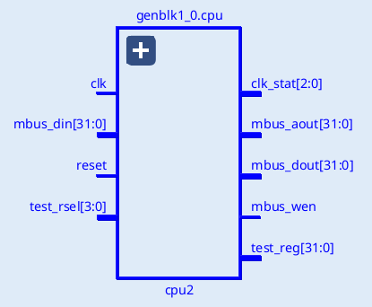
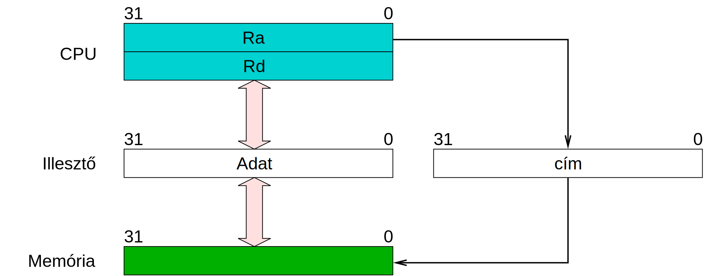
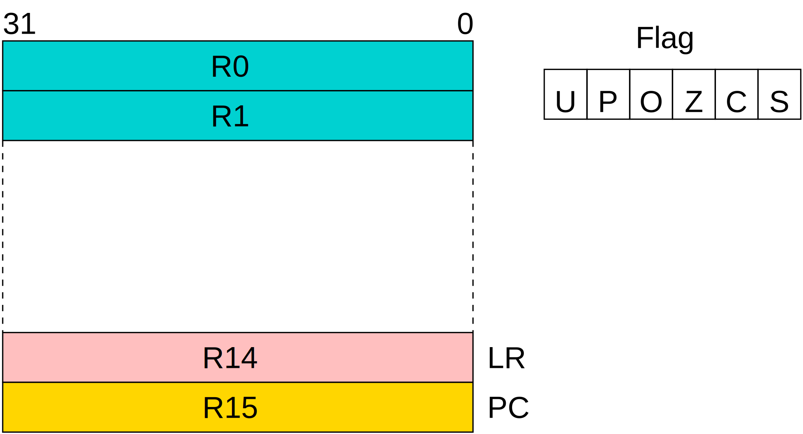
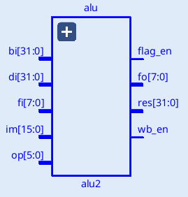

Adatmozgatás: MOV MVH MVL MVS MVZL SEB SEW SED ZEB ZEW GETB GETBS GETBZ PUTB RDS WRS Szubrutinhívás: CALL CES Memória: LD ST Aritmetika: ADD ADC PLUS SUB SBB CMP MUL BTST TEST AND OR XOR NOT NEG ROR ROL SHL SHR SHA SZ SEC CLC
Mind: ADC ADD AND BTST CALL CES CLC CMP GETB GETBS GETBZ LD MOV MUL MVH MVL MVS MVZL NEG NOT OR PLUS PUTB RDS ROL ROR SBB SEB SEC SED SEW SHA SHL SHR ST SUB SZ TEST WRS XOR ZEB ZEW
A mikroprocesszor egy RISC felépítésű (load/store), Neumann architektúrájú, 32 bites szoft processzor, amelyet FPGA-val valósíthatunk meg.

A mikroprocesszor az alábbi építőelemekből áll.
Az ütemező állítja elő a vezérlő jeleket a processzor többi eleme számára. Az ütemező állapot kódokat állít elő a működési fázisok jelzésére, az állapotok a clk bemenetre adott órajel hatására követik egymást. Az állapotok bináris sorszáma a clk_stat kimeneten jelenik meg. A reset bemenet az ütemezőt alaphelyzetbe állítja.
A vezérlőhöz tartozik még az ún. utasítás regiszter, amely a beolvasott utasítást tárolja a végrehajtás idejére.
Mivel a processzor Neumann architektúrájú, ezért csak egy memória illesztővel rendelkezik. Ezen az illesztőn keresztül olvassa be az utasításokat, és ezen az illesztőn keresztül végzi el memória írási és olvasási műveleteket is. Az illesztő az mbus_aout kimeneteken adja ki a művelethez használandó memória címet (32 bites). Írás esetén a memóriába tárolandó adat az mbus_dout kimeneteken jelenik meg (32 bit). Ebben az esetben az mbus_wen kimenet magas szintű lesz (írás jelzés). Olvasás műveletnél a megcímzett memória tartalmát az mbus_din bemenetre kell juttatni, ekkor az mbus_wen kimenet alacsony lesz.
A processzor által kezelt memória 32 bites szélességű, minden 32 bites rekesznek külön címe van. Memória műveletnél a processzor a megcímzett rekeszből 32 bites adatot olvas be, illetve 32 bites adatot ír ki.

A processzor állapota a belső regiszterekben tárolódik. A regiszter készlet 16 db 32 bites regiszterből áll. A regiszterek elnevezése: R0, R1...R15.

A processzor az R15 regisztert használja program számlálóként (Program Counter), ezért ennek tartalma minden utasítás végrehajtásakor eggyel növekszik.
A CALL utasítás a visszatéréshez szükséges címet az R14 (Link Regiszter) regiszterbe menti.
A processzor nem használ verem műveleteket, a verem megszervezése a programozó feladata. Az ehhez szükséges verem mutató (Stack Pointer) céljára bármelyik regiszter felhasználható. A programok megírásakor az R13 regisztert használtuk SP-ként.
A processzoron belül 16 speciális regiszterhez lehet hozzáférni, ezek között vannak írható és olvasható, illetve csak olvasható típusú regiszterek is. A speciális regisztereket az RDS és WRS utasításokkal lehet kezelni. Az RDS használható a regiszter kiolvasására, ugyanis ez az utasítás a megadott speciális regisztert egy általános regiszterbe másolja át. Az írható speciális regiszterek a WRS utasítással módosíthatók, amely az egyik általános regisztert a megadott speciális regiszterbe másolja.
A 0 sorszámú speciális regiszter a Flag regiszter, leírását lásd az Aritmetikai-logikai egység fejezetben.
Csak olvasható regiszter, a processzor verziószámát tartalmazza. A regiszter 3. bájtja mindig 0. A 2. bájt tartalmazza a fő verzió számot, az 1. byte pedig az al verzió számot. A 0. bájt a kiadás sorszáma.
Csak olvasható regiszter, 1 értékű bitjei azt jelzik, hogy egyes adott funkciók a processzorban rendelkezésre állnak-e.
A bit 1 értékű, ha a GETB utasítás különféle változatai (GETB, GETBS, GETBZ) rendelkezésre állnak.
A bit 1 értékű, ha a speciális regiszterek, valamint a kezelésükhöz szükséges RDS, WRS utasítások rendelkezésre állnak.
A bit 1 értékű, ha a Flag regiszter 32 bites.
A bit 1 értékű, ha a CES utasítást ismeri a processzor.
Csak olvasható regiszter, későbbi fejlesztésekhez fenntartva, értéke 0.
A 3..15 sorszámú regiszterek nincsenek megvalósítva, a sorszámok a későbbi fejlesztésekhez vannak fenntartva.
Az adat manipulációs műveleteket az ALU végzi, amely 32 bites egész (előjeles és előjel nélküli) adatokkal tud műveleteket végezni. Az ALU-nak 3 adat bemenete van: di, bi és az im.
A di bemenetre az eredményt eltároló regiszter eredeti (művelet előtti) értékét kell kötni. Az bi bemenetre a művelet operandusaként használt regiszter értéke kerül. A bi bemenetet olyan utasításoknál használja az ALU, amelyeknek regiszter operandusa van. A konstans operandusú utasításoknál a bi helyett a 16 bites imbemenet értéke lesz az operandus. Az im bemenetet az ALU 32 bitesre konvertálja, a konvertálás módja a művelettől függ. Az egy operandusú műveletek csak a di bemenetet használják, míg a két operandusú műveletek a di és a bi/im értékeket használják fel. Az operandus nélküli műveleteknél az eredmény a változatlan di bemeneti érték lesz.

Az fi bemenetre a flag regiszter művelet előtti értéke kerül, míg az op az elvégzendő művelet kódja. Az eredmény a res kimeneten jelenik meg, az fo kimenet a flag regiszter új értékét adja. A flag_en és a wb_en kimenetek azt mutatják, hogy az utasítás módosítja-e a flag, illetve az eredmény regisztert.
Az aritmetikai egység a műveletek eredményének jellemzőit a FLAG regiszterben tárolja el. Ez a regiszter nem része az általános regiszter készletnek, a tartalmához az utasítások speciális módon férhetnek csak hozzá. A flag regiszter 32 bites, az alább felsorolt biteken kívüli egyéb bitek tetszőleges célra hsználhatók.
A Flag regiszter 1. bitje (Flag[1]). Aritmetikai műveletek után azt jelzi, hogy előjel nélkülinek tekintve az operandusokat, volt-e túlcsordulás (1: volt, 0: nem volt).
A Flag regiszter 3. bitje (Flag[3]). Aritmetikai műveletek után azt jelzi, hogy előjelesnek tekintve az operandusokat, volt-e túlcsordulás (1: volt, 0: nem volt).
A Flag regiszter 0. bitje (Flag[0]). Aritmetikai és logikai műveletek után után az eredmény 31. bitjét tartalmazza, vagyis annak előjelét jelzi (1: negatív, 0: pozitív).
A Flag regiszter 2. bitje (Flag[2]). Aritmetikai és logikai műveletek után azt jelzi, hogy az eredmény nulla-e (1: igen, 0: nem).
U: a Flag regiszter 5. bitje (Flag[5]). P: a Flag regiszter 4. bitje (Flag[4]). Az LD/ST utasítások konstans eltolású indexelt címzési módja esetén a báziscím regiszter megváltoztatási módját határozzák meg.
A utasítások egyforma méretűek, minden utasítás kódja 32 bites, egy memória rekeszben tárolódik. Az utasításkészlet főbb csoportjai a következők:
Minden utasításnak lehet egy feltétele, az utasítás csak akkor végez állapot változtatást, illetve memória műveletet, ha a megadott feltétel igaz értékű. A feltétel az utasítás kódszavának legfelső 4 helyiértékű bitjén tárolódik. A lehetséges értékek következők:
| Kód | Feltétel | Flag | Működés pl. összehasonlítás esetén |
| 0 | AL | - | Mindig igaz, az utasítás a Flag-ek értékétől függetlenül végrehajtódik |
| 1 | EQ | Z=1 | op1 == op2 (equal) |
| 2 | NE | Z=0 | op1 != op2 (not equal) |
| 3 | CS, HS | C=1 | op1 >= op2 (unsigned higher or same) |
| 4 | CC, LO | C=0 | op1 < op2 (unsigned lower) |
| 5 | MI | S=1 | negatív eredmény (signed) |
| 6 | PL | S=0 | pozitív eredmény (signed) |
| 7 | VS | O=1 | van túlcsordulás (signed) |
| 8 | VC | O=0 | nincs túlcsordulás (signed) |
| 9 | HI | C=1 && Z=0 | op1 > op2 (unsigned higher) |
| 10 | LS | C=0 || Z=1 | op1 <= op2 (unsigned lower or same) |
| 11 | GE | S==O | op1 >= op2 (signed greater than or equal) |
| 12 | LT | S!=O | op1 < op2 (signed less than) |
| 13 | GT | Z=0 && S==O | op1 > op2 (signed greater than) |
| 14 | LE | Z=1 || S!=O | op1 <= op2 (signed less than or equal) |
| 15 | - | - | Feltétel nélküli utasítás, jelenleg nem használt, az utasításkészlet bővítésre fenntartva |
Szubrutinhívásra a CALL utasítást lehet használni, amely a PC-t (R15) elmenti az LR-ben (R14). Ha a szubrutin nem hív más rutinokat, akkor nincs más teendő. Ellenkező esetben az LR értékét a memóriában kialakított verem adatszerkezetbe el kell menteni. Erre a célra az SP (R13) regisztert használjuk mutatóként, a mentés és a betöltés a memória kezelő utasítások megfelelő címzésmódjának használatával elvégezhető. Megjegyezzük, hogy verem mutatóként az R14 és R15 kivételével bármelyik regiszter használható.
Ugró utasítások nincsenek az utasítás készletben, bármely utasítás ugrást végez (beleértve az LD utasítást is), amelynek az R15 a cél regisztere, ahol az eredménye tárolódik. Mivel minden utasítás lehet feltételes, így külön feltételes vezérlésátadó utasításokra sincs szükség.
| GETB | Rd,Rb,Ri | COND.0110.Rd .0001.000-.Rb .----.Ri |
i= Ri[1:0] Rd[7:0]= Rb[i*8+7:i*8] |
| GETB | Rd,Rb,u2 | COND.0110.Rd .0001.100-.Rb .----.--u2 | Rd[7:0]= Rb[u2*8+7:u2*8] |
Az utasítás az Rb regiszter kiválasztott bájtját az Rd regiszterbe másolja, az Rd felső helyiértékű 3 bájtja nem változik. Az Rb regiszter 4 bájtja közül a másoláshoz egyet lehet kiválasztani, vagy az Ri regiszter értékével, vagy egy 2 bites konstanssal. Ha az Ri-vel választunk, akkor a processzor a regiszternek csak az alsó két bitjét használja.
| GETBS | Rd,Rb,Ri | COND.0110.Rd .0001.011-.Rb .----.Ri |
i= Ri[1:0] Rd= sex(Rb[i*8+7:i*8]) |
| GETBS | Rd,Rb,u2 | COND.0110.Rd .0001.111-.Rb .----.--u2 | Rd=sex(Rb[u2*8+7:u2*8]) |
Az utasítás az Rb regiszter kiválasztott bájtját az Rd regiszterbe másolja, az Rd felső helyiértékű 3 bájtja az Rb kiválasztott byte-jának 7. bitjével töltődik fel. Az Rb regiszter 4 bájtja közül a másoláshoz egyet lehet kiválasztani, vagy az Ri regiszter értékével, vagy egy 2 bites konstanssal. Ha az Ri-vel választunk, akkor a processzor a regiszternek csak az alsó két bitjét használja.
| GETBZ | Rd,Rb,Ri | COND.0110.Rd .0001.010-.Rb .----.Ri |
i= Ri[1:0] Rd= zex(Rb[i*8+7:i*8]) |
| GETBZ | Rd,Rb,u2 | COND.0110.Rd .0001.110-.Rb .----.--u2 | Rd= zex(Rb[u2*8+7:u2*8]) |
Az utasítás az Rb regiszter kiválasztott bájtját az Rd regiszterbe másolja, az Rd felső helyiértékű 3 bájtja 0 lesz. Az Rb regiszter 4 bájtja közül a másoláshoz egyet lehet kiválasztani, vagy az Ri regiszter értékével, vagy egy 2 bites konstanssal. Ha az Ri-vel választunk, akkor a processzor a regiszternek csak az alsó két bitjét használja.
| MOV | Rd,Rb | COND.0000.Rd .0000.----.Rb .----.---- | Rd= Rb |
Az utasítás az Rb regiszter (forrás) tartalmát átmásolja az Rd (cél) regiszterbe.
| MVH | Rd,u16 | COND.0001.Rd .0001.u16 .u16 .u16 .u16 | Rd[31:16]= u16 |
Az utasítás egy regiszter konstanssal való feltöltésére használható. Az utasítás második paramétere egy unsigned 16 bites konstans, amely az Rd regiszter felső helyiértékű 16 bitjébe kerül. A regiszter alsó helyiértékű 16 bitje változatlan marad. A Flag regiszter nem módosul.
| MVL | Rd,u16 | COND.0001.Rd .0000.u16 .u16 .u16 .u16 | Rd[15:0]= u16 |
Az utasítás egy regiszter konstanssal való feltöltésére használható. Az utasítás második paramétere egy unsigned 16 bites konstans, amely az Rd regiszter alsó helyiértékű 16 bitjébe kerül. A regiszter felső helyiértékű 16 bitje változatlan marad. A Flag regiszter nem módosul.
| MVS | Rd,s16 | COND.0001.Rd .0011.s16 .s16 .s16 .s16 | Rd= sex(s16) |
Az utasítás egy regiszter konstanssal való feltöltésére használható. Az utasítás második paramétere egy signed 16 bites konstans, amelyet a CPU előjel kiterjesztéssel 32 bitesre alakít, ez az érték kerül az Rd regiszterbe. A Flag regiszter nem módosul.
| MVZL | Rd,u16 | COND.0001.Rd .0010.u16 .u16 .u16 .u16 | Rd= zex(u16) |
Az utasítás egy regiszter konstanssal való feltöltésére használható. Az utasítás második paramétere egy unsigned 16 bites konstans, amelyet a CPU 0 kiterjesztéssel 32 bitesre alakít, ez az érték kerül az Rd regiszterbe. A Flag regiszter nem módosul.
| PUTB | Rd,Rb,Ri | COND.0111.Rd .0001.0---.Rb .----.Ri |
i=Ri[1:0] Rd[i*8+7:i*8]=Rb[7:0] |
| PUTB | Rd,Rb,u2 | COND.0111.Rd .0001.0---.Rb .----.--u2 | Rd[u2*8+7:u2*8]=Rb[7:0] |
Az utasítás az Rb regiszter legalsó helyiértékű bájtját átmásolja az Rd regiszter kiválasztott bátjába, úgy, hogy az Rd többi bájtja nem változik. Az Rd módosítandó bájtjának sorszámát az Ri regiszterrel (amelynek csak a legalsó két bitjét használja a processzor), vagy egy két bites konstanssal választhatjuk ki.
| RDS | Rd,Rs | COND.0110.Rd .0010.----.Rs .----.---- | Rd= Rs |
Az Rs sorszámú speciális regiszter kiolvasása és átmásolása az Rd regiszterbe.
| SEB | Rd | COND.0010.Rd .0010.----.----.----.---- | Rd= sex(Rd[7:0]) |
Az utasítás az Rd regiszter tartalmának alsó helyiértékű 8 bitjét előjel kiterjesztéssel kibővíti 32 bitre, majd ezt az eredményt tárolja az Rd regiszterben (felülíródik). A Flag regiszter nem változik.
| SED | Rd,Rb | COND.0000.Rd .0011.----.Rb .----.---- | Rd= sex(Rb) |
Előjel kiterjesztés 32 bitről 64 bitre. Az utasítás az Rb előjelével (Rb[31] bit) tölti fel az Rd minden bitjét, így az Rd,Rb regiszterek együtt az Rb-nek a 64 bitre kiterjesztett értékét fogják tartamazni. Az utasítás nem módosítja a Flag regisztert.
| SEB | Rd | COND.0010.Rd .0011.----.----.----.---- | Rd= sex(Rd[15:0]) |
Az utasítás az Rd regiszter tartalmának alsó helyiértékű 16 bitjét előjel kiterjesztéssel kibővíti 32 bitre, majd ezt az eredményt tárolja az Rd regiszterben (felülíródik). A Flag regiszter nem változik.
| WRS | Rd,Rs | COND.0111.Rd .0010.----.Rs .----.---- | Rs= Rd |
Az Rd regiszter átmásolása az Rs sorszámú speciális regiszterbe.
| ZEB | Rd | COND.0010.Rd .0000.----.----.----.---- | Rd= zex(Rd[7:0]) |
Az utasítás az Rd regiszter tartalmának alsó helyiértékű 8 bitjét 0 kiterjesztéssel kibővíti 32 bitre, majd ezt az eredményt tárolja az Rd regiszterben (felülíródik). A Flag regiszter nem változik.
| ZEW | Rd | COND.0010.Rd .0001.----.----.----.---- | Rd= zex(Rd[15:0]) |
Az Rd[15:0] bitjein lévő 16 bites adat 0 kiterjesztése 32 bitesre. Az eredmény az Rd regiszterbe kerül (felülíródik). Az utasítás a Flag regisztert nem módosítja.
| CALL | u24 | COND.0100.u24 .u24 .u24 .u24 .u24 .u24 |
R14= R15 R15= zex(u24) |
| CALL | Rd,s20 | COND.0101.Rd .s20 .s20 .s20 .s20 .s20 |
R14= R15 R15= Rd+sex(s20) |
Az utasítás működése az abszolút címzésmódú változat esetén:
R14= R15
R15= zex(u24)
Ahol a zex() művelet a Zero Extension-t jelenti, vagyis az utasításban szereplő unsigned 24 bites paramétert a CPU nullákkal bővíti 32 bit méretűre. Ezzel az utasítással a memória első 16 MB-ja érhető el.
Az utasítás működése relatív címzési mód esetén:
R14= R15
R15= Rd + sex(s20)
Ahol a sex() a Sign Extension műveletet jelenti, ami az utasításban megadott signed 20 bites paramétert előjel megtartással bővíti 32 bites méretűre. Ha az Rd az R15, akkor figyelembe kell venni, hogy az R15 az összeadás elvégzésekor a következő utasítás címét tartalmazza. Az R15 használata lehetővé teszi pozíció független kód készítését, ahol az elérhető cím a hívás helyétől ±0.5 MB távolságon belül lehet.
| CALL | u24 | 1111.0100.u24 .u24 .u24 .u24 .u24 .u24 |
R14= R15 R15= zex(u24) |
| CALL | Rd,s20 | 1111.0101.Rd .s20 .s20 .s20 .s20 .s20 |
R14= R15 R15= Rd+sex(s20) |
Az utasítás működése megegyezik a CALL utasítással, azonban feltételt nem lehet megadni, a szubrutinhívás feltétel nélkül megtörténik. Az utasítást abban az esetben célszerű használni, amikor a hívás utasítás után közvetlenül egy beágyazott sztring van a memóriában, amely a szubrutin paramétere. Az ilyen szubrutinok nem a hívás utáni, hanem a sztring utáni utasításra térnek vissza. A CES utasítás használata segíti a szimulátort a visszatérési cím megállapításában, hogy a szubrutin a next paranccsal lefuttatható legyen.
| LD | Rd,u16 | COND.0111.Rd .0000.u16 .u16 .u16 .u16 | Rd= M[zex(u16)] |
| LD | Rd,Ra,Rb | COND.1010.Rd .Ra .----.Rb .----.---- | Rd= M[Ra+Rb] |
| LD | Rd,Ra+,Rb | COND.1011.Rd .Ra .10--.Rb .----.---- | Rd= M[(Ra++)+Rb] |
| LD | Rd,Ra-,Rb | COND.1011.Rd .Ra .00--.Rb .----.---- | Rd= M[(Ra--)+Rb] |
| LD | Rd,+Ra,Rb | COND.1011.Rd .Ra .11--.Rb .----.---- | Rd= M[(++Ra)+Rb] |
| LD | Rd,-Ra,Rb | COND.1011.Rd .Ra .01--.Rb .----.---- | Rd= M[(--Ra)+Rb] |
| LD | Rd,Ra,s16 | COND.1110.Rd .Ra .s16 .s16 .s16 .s16 | Rd= M[Ra+sex(s16)] |
| LD | Rd,*Ra,s16 | COND.1111.Rd .Ra .s16 .s16 .s16 .s16 | Rd= M[(*Ra)+sex(s16)] |
A memória címe megadható direkt, vagy indexelt címzésmóddal. Direkt címésmód esetén a cím mérete unsigned 16 bit lehet, ami a címtér első 64 kB-jának az elérését teszi lehetővé.
Indexelt címzésmód esetén a bázis cím az Ra regiszterben van, amihez hozzáadódik egy eltolási érték, amely lehet az Rb regiszter, vagy egy signed 16 bites konstans. Indexelt címzés esetén kérhetjük a bázis regiszter módosítását. Ha regiszter eltolást alkalmazunk, akkor az Ra változtatását az utasításban adhatjuk meg, amely lehet pre-increment (növelés eggyel a cím számítás előtt), pre-decrement (csökkentés eggyel a cím számítás előtt), post-increment (növelés eggyel a cím számítás után), vagy post-decrement (csökkentés eggyel a cím számítás után). Ebben az esetben az utasítás módosítja mind az Rd, mind az Ra regisztert. Ha az Rd és az Ra regiszter ugyanaz, akkor a memóriából beolvasott adat felülírja a címet.
Konstans eltolás esetén a módosítás módját nem az utasítás, hanem a FLAG regiszter U és P bitjei határozzák meg, erre utal a fenti táblázatban a * jelölés:
| U | P | Ra módosítása: *Ra |
| 0 | 0 | pre-increment: ++Ra |
| 0 | 1 | post-increment: Ra++ |
| 1 | 0 | pre-decrement: --Ra |
| 1 | 1 | post-decrement: Ra-- |
| ST | Rd,u16 | COND.0110.Rd .0000.u16 .u16 .u16 .u16 | M[zex(u16)]= Rd |
| ST | Rd,Ra,Rb | COND.1000.Rd .Ra .----.Rb .----.---- | M[Ra+Rb]= Rd |
| ST | Rd,Ra+,Rb | COND.1001.Rd .Ra .10--.Rb .----.---- | M[(Ra++)+Rb]= Rd |
| ST | Rd,Ra-,Rb | COND.1001.Rd .Ra .00--.Rb .----.---- | M[(Ra--)+Rb]= Rd |
| ST | Rd,+Ra,Rb | COND.1001.Rd .Ra .11--.Rb .----.---- | M[(++Ra)+Rb]= Rd |
| ST | Rd,-Ra,Rb | COND.1001.Rd .Ra .01--.Rb .----.---- | M[(--Ra)+Rb]= Rd |
| ST | Rd,Ra,s16 | COND.1100.Rd .Ra .s16 .s16 .s16 .s16 | M[Ra+sex(s16)]= Rd |
| ST | Rd,*Ra,s16 | COND.1101.Rd .Ra .s16 .s16 .s16 .s16 | M[(*Ra)+sex(s16)]= Rd |
A memória címe megadható direkt, vagy indexelt címzésmóddal. Direkt címésmód esetén a cím mérete unsigned 16 bit lehet, ami a címtér első 64 kB-jának az elérését teszi lehetővé.
Indexelt címzésmód esetén a bázis cím az Ra regiszterben van, amihez hozzáadódik egy eltolási érték, amely lehet az Rb regiszter, vagy egy signed 16 bites konstans. Indexelt címzés esetén kérhetjük a bázis regiszter módosítását. Ha regiszter eltolást alkalmazunk, akkor az Ra változtatását az utasításban adhatjuk meg, amely lehet pre-increment (növelés eggyel a cím számítás előtt), pre-decrement (csökkentés eggyel a cím számítás előtt), post-increment (növelés eggyel a cím számítás után), vagy post-decrement (csökkentés eggyel a cím számítás után).
Konstans eltolás esetén a módosítás módját nem az utasítás, hanem a FLAG regiszter U és P bitjei határozzák meg, erre utal a fenti táblázatban a * jelölés:
| U | P | Ra módosítása: *Ra |
| 0 | 0 | post-decrement: Ra-- |
| 0 | 1 | pre-decrement: --Ra |
| 1 | 0 | post-increment: Ra++ |
| 1 | 1 | pre-increment: ++Ra |
| ADC | Rd,Rb | COND.0000.Rd .0101.----.Rb .----.---- | Rd,F[OZCS]= Rd + Rb + C |
| ADC | Rd,s16 | COND.0001.Rd .0101.s16 .s16 .s16 .s16 | Rd,F[OZCS]= Rd + sex(s16) + C |
Összeadás átvitel figyelembevételével. Az első operandus egyúttal az eredmény tárolási helye is (felülíródik). A második operandus regiszter, vagy signed 16 bites konstans lehet. A művelet mind a négy aritmetikai flag-et módosítja.
| ADD | Rd,Rb | COND.0000.Rd .0100.----.Rb .----.---- | Rd,F[OZCS]= Rd + Rb |
| ADD | Rd,s16 | COND.0001.Rd .0100.s16 .s16 .s16 .s16 | Rd,F[OZCS]= Rd + sex(s16) |
Összeadás átvitel figyelembe vétele nélkül. Az első operandus egyúttal az eredmény tárolási helye is (felülíródik). A második operandus regiszter, vagy signed 16 bites konstans lehet. A művelet mind a négy aritmetikai flag-et módosítja.
| AND | Rd,Rb | COND.0000.Rd .1111.----.Rb .----.---- | Rd,F[ZS]= Rd & Rb |
| AND | Rd,o16 | COND.0001.Rd .1111.o16 .o16 .o16 .o16 | Rd,F[ZS]= Rd & oex(o16) |
Logikai ÉS művelet az operandusok azonos pozíciójú bitjei között. Az első operandus egyúttal az eredmény tárolási helye is (felülíródik). A második operandus regiszter, vagy 16 bites konstans lehet. A konstans 32 bitesre való kiterjesztése mindig 1-es értékű bitekkel történik. Az utasítás ebben a formában bitek 0-ba állítására használható, ha a törlendő bitek a 0-15 pozíciók között találhatók.
| BTST | Rd,Rb | COND.0000.Rd .1011.----.Rb .----.---- | Rd,F[ZS]= Rd & Rb |
| BTST | Rd,u16 | COND.0001.Rd .1011.u16 .u16 .u16 .u16 | Rd,F[ZS]= Rd & zex(u16) |
Logikai ÉS művelet az operandusok azonos pozíciójú bitjei között. Az első operandus egyúttal az eredmény tárolási helye is (felülíródik). A második operandus regiszter, vagy unsigned 16 bites konstans lehet. A konstans 32 bitesre való kiterjesztése mindig 0 értékű bitekkel történik. Az utasítás ebben a formában bit értékének a vizsgálatára használható, ha a vizsgált bit a 0-15 pozíció között található. Az utasítás csak a Z és S flag-et módosítja.
| CLC | - | COND.0010.----.1101.----.----.----.---- | F[C]= 0 |
Az utasítás 0 értéket ír a Flag regiszter C bitjébe. Más hatása nincs.
| CMP | Rd,Rb | COND.0000.Rd .1000.----.Rb .----.---- | F[OZCS]= Rd + Rb + 1 |
| CMP | Rd,s16 | COND.0001.Rd .1000.s16 .s16 .s16 .s16 | F[OZCS]= Rd + sex(s16) + 1 |
Az utasítás a két operandus összehasonlítására használható. A működése megegyezik a SUB utasítással, azonban a kivonás eredményét nem tárolja, az első operandus regisztere (Rd) változatlan marad, csak a Flag regiszter aritmetikai bitjei módosulnak.
| GETF | Rd | COND.0010.Rd .1110.----.----.----.---- | Rd= F[UPOZCS] |
Az utasítás átmásolja a Flag regiszter értékét (beleértve az U és P biteket is) a megadott Rd regiszterbe. A jelzőbitek a Flag regiszter 0-5 bitjeit foglalják el, a regiszter azonban 8 bites. A 6-7 bitek tetszőleges 2 bites érték tárolására használhatók. Az utasítás a Flag tartalmát az Rd[7:0] bitekbe másolja, az Rd[31:8] bitek 0 értéket kapnak.
| MUL | Rd,Rb | COND.0000.Rd .1000.----.Rb .----.---- | Rd,F[ZS]= Rd * Rb |
| MUL | Rd,s16 | COND.0001.Rd .1000.s16 .s16 .s16 .s16 | Rd,F[ZS]= Rd * sex(Rb) |
Az utasítás a két operandus értékét szorozza össze, az eredmény alsó helyiértékű 32 bitje az Rd regiszterbe kerül. Az eredmény felső helyiértékű 32 bitje elvész. Az utasítás csak a Z és S Flag biteket módosítja.
| NEG | Rd | COND.0010.Rd .0101.----.----.----.---- | Rd,F[OZCS]= Rd + 1 |
Az utasítás a signed 32 bitesnek tekintett Rd regiszter értékének az előjelét az ellenkezőjére állítja, az eredmény az Rd regiszterbe kerül. A CPU a műveletet az Rd=0-Rd kivonás elvégzésével számítja ki, a Flag biteket ennek megfelelően állítja be.
| NOT | Rd | COND.0010.Rd .0100.----.----.----.---- | Rd,F[ZS]= Rd |
A művelet az Rd bitjeit egyenként negálja, az eredmény az Rd regiszterbe kerül. Az utasítás csak a Z és S Flag biteket módosítja.
| OR | Rd,Rb | COND.0000.Rd .1101.----.Rb .----.---- | Rd,F[ZS]= Rd | Rb |
| OR | Rd,u16 | COND.0001.Rd .1101.u16 .u16 .u16 .u16 | Rd,F[ZS]= Rd | zex(u16) |
Logikai VAGY művelet az operandusok azonos pozíciójú bitjei között. Az első operandus egyúttal az eredmény tárolási helye is (felülíródik). A második operandus regiszter, vagy 16 bites konstans lehet. A konstans 32 bitesre való kiterjesztése mindig 0-s értékű bitekkel történik. Az utasítás ebben a formában bitek 1-be állítására használható, ha a beállítandó bitek a 0-15 pozíciók között találhatók.
| PLUS | Rd,Rb | COND.0000.Rd .1010.----.Rb .----.---- | Rd= Rd + Rb |
| PLUS | Rd,s16 | COND.0001.Rd .1010.s16 .s16 .s16 .s16 | Rd= Rd + sex(s16) |
Összeadás átvitel figyelembe vétele és a Flag regiszter módosítása nélkül. Az első operandus egyúttal az eredmény tárolási helye is (felülíródik). A második operandus regiszter, vagy signed 16 bites konstans lehet. Az utasítás eredménye megegyezik az ADD utasítás eredményével, azonban a Flag regisztert nem módosítja.
| ROL | Rd | COND.0010.Rd .0111.----.----.----.---- | Rd,F[CZS]= rol(C,Rd) |
33 bites forgatás balra a C bittel együtt. A C Flag bit értéke az Rd[31] bit forgatás előtti értéke lesz. A C Flag bit forgatás előtti értéke az Rd[0] bitbe kerül. A forgatás után a Z és S Flag bitek az Rd-nek megfelelő értéket veszik fel.
| ROR | Rd | COND.0010.Rd .0111.----.----.----.---- | Rd,F[CZS]= ror(Rd,C) |
33 bites forgatás jobbra a C Flag bittel együtt. A C Flag értéke az Rd[0] bit forgatás előtti értéke lesz. A C Flag bit forgatás előtti értéke az Rd[31] bitbe kerül. A forgatás után a Z és S Flag bitek az Rd-nek megfelelő értéket veszik fel.
| SBB | Rd,Rb | COND.0000.Rd .0111.----.Rb .----.---- | Rd,F[OZCS]= Rd + Rb + C |
| SBB | Rd,s16 | COND.0001.Rd .0111.s16 .s16 .s16 .s16 | Rd,F[OZCS]= Rd + sex(s16) + C |
Kivonás művelet. Az első operandus (Rd) egyúttal az eredmény tárolási helye is (felülíródik). A második operandus egy 32 bites regiszter, vagy egy signed 16 bites konstans lehet, amelyet a CPU előjel kiterjesztéssel alakít 32 bitesre. A második operandus negáltját adja hozzá az elsőhöz Rd=Rd+(-op2), úgy, hogy kezdő átvitelként a C Flag bitet használja fel. A kivonás után a C Flag 0 értéke jelenti azt, hogy túlcsordulás keletkezett.
| SEC | COND.0010.----.1100.----.----.----.---- | F[C]= 1 |
Az utasítás a C Flag bitet 1 értékűre állítja. Más hatása nincs.
| SETF | Rd | COND.0010.Rd .1111.----.----.----.---- | F[UPOZCS]= Rd |
Az utasítás az Rd regiszter értékét a Flag regiszterbe másolja. A használt Flag bitek a regiszter 0-5 bitjeit foglalják el, de a regiszter 8 bites. A 6-7 bitek tetszőleges 2 bites érték tárolására használhatók, vagyis a műveletben az Rd[7:0] bitjei kerülnek a Flag regiszterbe, az Rd[31:8] bitek figyelmen kívül maradnak.
| SHA | Rd | COND.0010.Rd .1010.----.----.----.---- | Rd,F[ZCS]= sha(Rd) |
Signed 32 bites adat aritmetikai (előjel tartó) eltolása jobbra 1 bittel. A C Flag bit az Rd[0] eltolás előtti értékét veszi fel. Az Rd[31] bit értéke nem változik, a 32 bites adat megtartja az előjelét. A Z és S Flag bitek az Rd eltolás utáni értéke alapján kapnak értéket.
| SHL | Rd | COND.0010.Rd .1000.----.----.----.---- | Rd,F[ZCS]= shl(Rd) |
Eltolás balra 1 bittel. A C Flag bit az Rd[31] eltolás előtti értékét kapja, az Rd[0] bitje 0 lesz. A Z és S Flag bitek az Rd eltolás utáni értékének megfelelően módosul.
| SHR | Rd | COND.0010.Rd .1001.----.----.----.---- | Rd,F[ZCS]= shr(Rd) |
Unsigned 32 bites adat eltolása jobbra 1 bittel. A C Flag bit értéke az Rd[0] eltolás előtti értéke lesz. Az Rd[31] bit 0 értéket kap. A Z és az S Flag bitek az Rd eltolás utáni értéke alapján kapnak értéket, vagyis a S Flag bit mindig 0 lesz.
| SUB | Rd,Rb | COND.0000.Rd .0110.----.Rb .----.---- | Rd,F[OZCS]= Rd + Rb + 1 |
| SUB | Rd,s16 | COND.0001.Rd .0110.s16 .s16 .s16 .s16 | Rd,F[OZCS]= Rd + sex(s16) + 1 |
Kivonás művelet az átvitel figyelmen kívül hagyásával. Az első operandus (Rd) egyúttal az eredmény tárolási helye is (felülíródik). A második operandus egy 32 bites regiszter, vagy egy signed 16 bites konstans lehet, amelyet a CPU előjel kiterjesztéssel alakít 32 bitesre. A második operandus negáltját adja hozzá az elsőhöz Rd=Rd+(-op2), úgy, hogy kezdő átvitelként 1 értéket használ fel. A kivonás után a C Flag 0 értéke jelenti azt, hogy túlcsordulás keletkezett.
| SZ | Rd | COND.0010.Rd .1011.----.----.----.---- | F[ZS]= Rd |
Az utasítás az Rd regiszter értékének a 0-val való összehasonlítására, illetve az előjelének a megállapítására használható. Ha a regiszter 0, akkor a Z Flag bit 1 lesz, különben 0. Az S Flag bit az Rd[31] értékét veszi fel. Az Rd nem változik.
| TEST | Rd,Rb | COND.0000.Rd .1100.----.Rb .----.---- | F[ZS]= Rd & Rb |
| TEST | Rd,u16 | COND.0001.Rd .1100.u16 .u16 .u16 .u16 | F[ZS]= Rd & zex(u16) |
Logikai ÉS művelet az operandusok azonos pozíciójú bitjei között. Az első operandus nem változik. A második operandus regiszter, vagy unsigned 16 bites konstans lehet. A konstans 32 bitesre való kiterjesztése mindig 0 értékű bitekkel történik. Az utasítás ebben a formában bit értékének a vizsgálatára használható, ha a vizsgált bit a 0-15 pozíció között található. Az utasítás csak a Z és S flag-et módosítja, az Rd regiszter értéke változatlan marad. Az utasítás a BTST utasítással megegyezően működik, az Rd módosítása nélkül.
| XOR | Rd,Rb | COND.0000.Rd .1110.----.Rb .----.---- | Rd,F[ZS]= Rd ^ Rb |
| XOR | Rd,u16 | COND.0001.Rd .1110.u16 .u16 .u16 .u16 | Rd,F[ZS]= Rd ^ zex(u16) |
Logikai XOR művelet az operandusok azonos pozíciójú bitjei között. Az első operandus egyúttal az eredmény tárolási helye is (felülíródik). A második operandus regiszter, vagy unsigned 16 bites konstans lehet. A konstans 32 bitesre való kiterjesztése mindig 0 értékű bitekkel történik. Az utasítás ebben a formában bit értékének a negálására használható, ha a negálandó bit a 0-15 pozíció között található. Az utasítás csak a Z és S flag-et módosítja.